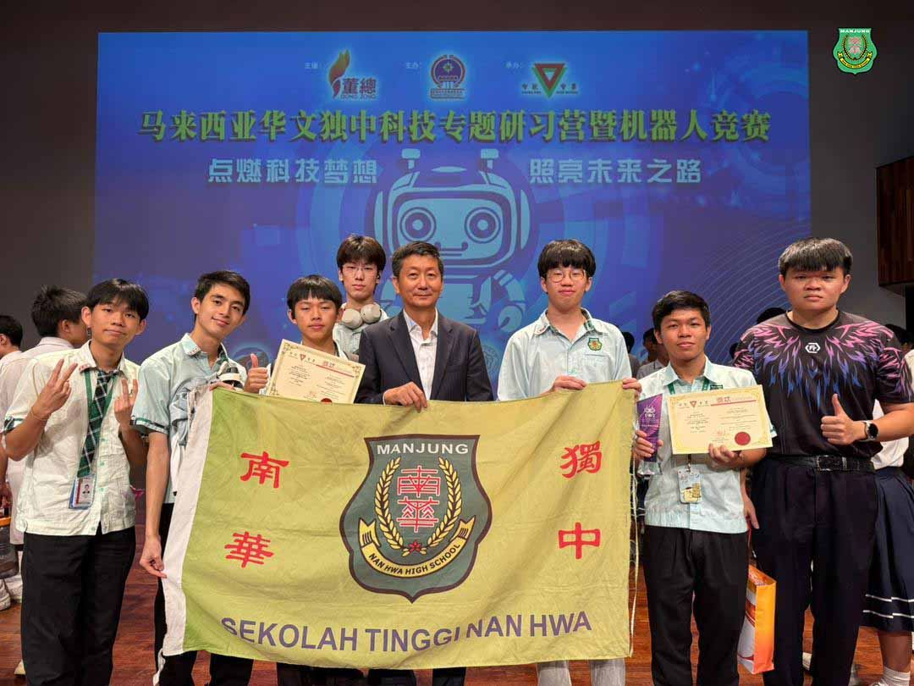
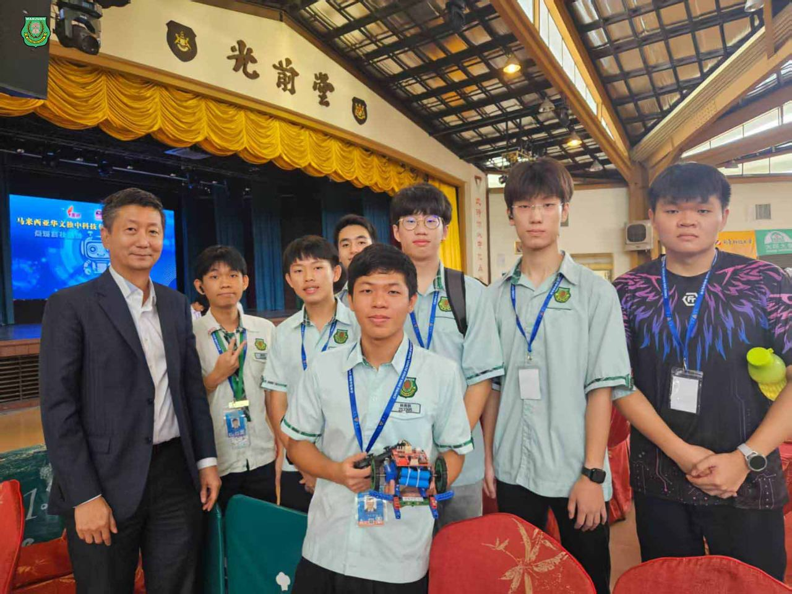
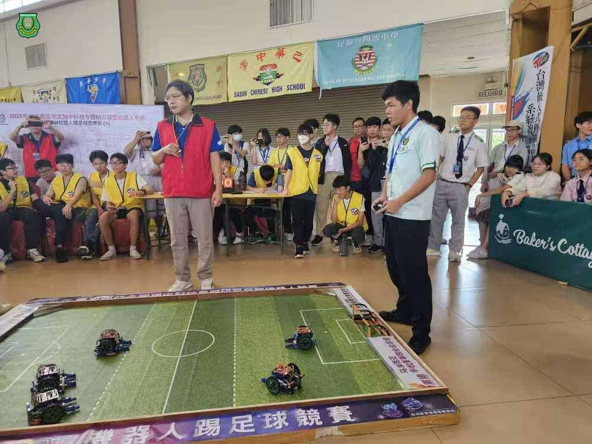
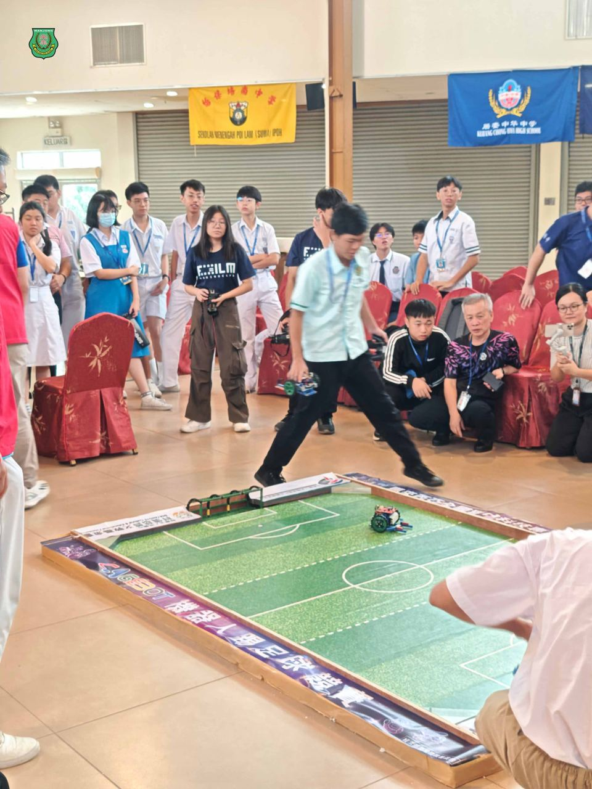
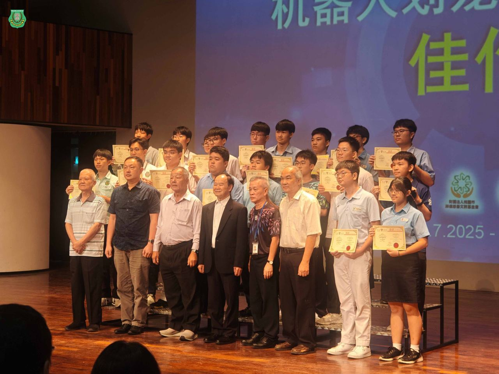
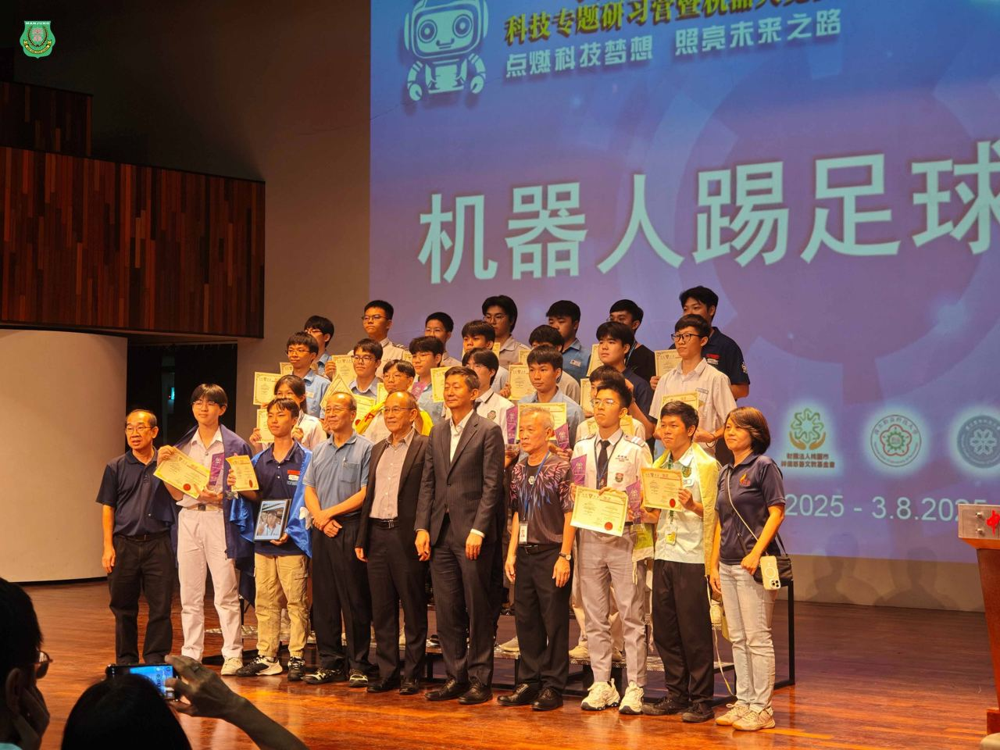

征战全国科技营机器人竞赛
征战全国科技营机器人竞赛
南华独中学生载誉而归
在 #2025年马来西亚全国华文独中科技专题研习营暨机器人竞赛 中，南华独中代表队在20所独中128位师生中以优异表现脱颖而出，勇夺佳绩。其中，#林隽晧同学 与联队伙伴在足球机器人项目中荣获亚军，并成功获得前往台湾参加国际赛的宝贵机会；#雷挺盛同学 则在机器人划龙舟竞速赛（个人赛）中挺进八强，荣获佳作奖，为校争光。
#少年强则国强
南华独中校长陈丽冰博士对学生的优异表现表示肯定与祝贺。陈校长赞许孩子们在科技赛场上奋力拼搏，既展现智慧，也体现了不屈的坚韧精神。“今日你们于赛场上仰望星空，明日必能在科技长空翱翔。”陈校长 亦特别感谢此次全程带队兼负责培训的林继汉老师，并表示：“林继汉老师不辞劳苦，默默耕耘，是学生背后的坚强支柱，功不可没。”
#热忱可贵 #天赋尤显
作为此次竞赛的带队老师，林继汉老师对于学生的成就表示激赏：“见证学生们从陌生到精通的过程，尤其在组装与编程细节上展现出惊人的专注力与热忱。他们不仅愿意学，更勇于突破自己的限制，未来可期。”他也特别提及此次表现出色的林隽晧与雷挺盛两位同学：“他们的天赋在此次竞赛中光芒毕现，得奖是肯定，更是起点。”林继汉老师为参赛学生感到骄傲，并期许他们带着这份荣耀，继续在未来的科技路上不断前行。





